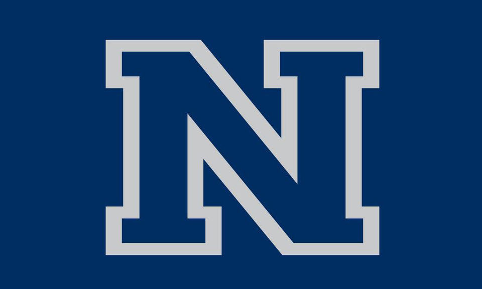

My Work
Software Development Intern | June 2020 - Present
Bruël & Kjær Vibro leads the world as the top independent provider of Condition Monitoring technology for rotating industrial machinery. As an intern, my primary responsibility is to assist Senior Engineers with the development of software-based solutions by designing and implementing tools and other features for a variety of different projects. I collaborated with the Head of Machine Learning Research to create an ASP.NET Web Application for Principal Component Analysis (PCA) of synchronous vibrational waveforms using Microsoft Azure's Data Factory. This application was hosted on Microsoft Azure, relying on Blazor with C# for both client and server side logic and the Entity Framework for data storage and delivery. Click here to view more about this project. Additionally, I have worked with Product Management to understand and implement individualized customer requirements in order to maximize the quality of our products and ensure customer satisfaction.
Teaching Fellow | November 2019 - Present
As a Teaching Fellow for CS 135, the intro Computer Science course at UNR, I am expected to help new students learn the fundamentals of C-programming. This involves holding office hours for students to ask questions regarding homework, tests, or anything else related to the class, helping the Teaching Assistants with lab instruction, grading tests and other assignments, and occasionally holding reviews of specific concepts from the class. I am grateful for the opportunity to make an impact on the younger students. Watching them improve over the course of the semester inspires me to continue pushing my limits as well.
Engineering Tutoring Center | September 2019 - Present
My work as a Computer Science Tutor at the Engineering Tutoring Center revolves around me being an additional resource for students who need extra help in their CS courses. This primarly consists of helping with homework assignments, guiding students through coding projects, assisting with code debugging, and answering general CS related questions. Most students feel very comfortable coming to the ETC, so there is always a wide variety of questions, skill-levels, and personalities that I must be able to adapt to, which makes the job even more fun and engaging!
Alacrity AI
Software Development Intern | February 2019 - August 2019
Alacrity AI is a small artificial intelligence research company, based in Reno, NV, focusing on autonomous driving using computer vision and the Caffe Deep Learning Framework. During my time here as a Software Development Intern, I collected, created, and annotated data sets for the training and evaluation of the network. Additionally, I used Python for formatting images, object detection, classification, and segmentation, and was responsible for analyzing the performance of the network and altering the model as needed to improve results. I learned a lot from the people around me, and I really enjoyed the work, the environment, and the experience overall.